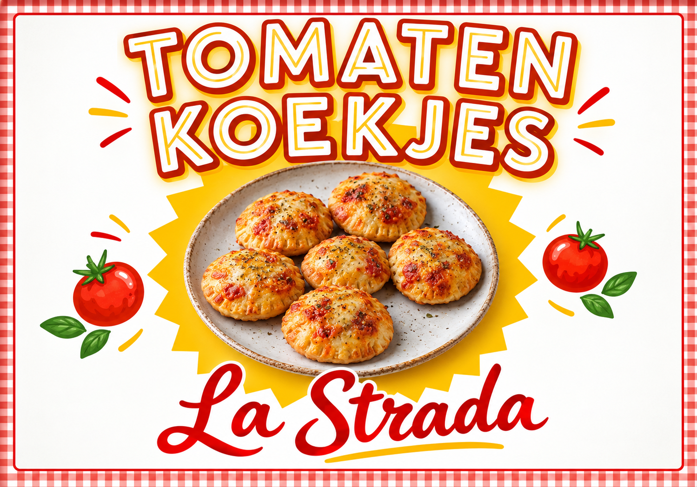

Goudbruin gebakken
Vers deeg met die fijne, knapperige bite.

Vers uit de foodtruck · Nederweert
Knapperig pizzadeeg, rijke tomatensaus, gesmolten kaas en Italiaanse kruiden. Het Tomaten Koekje is klein van formaat, maar groots van smaak.
De nieuwe klassieker
Een hartige traktatie met de ziel van een pizza. Perfect voor tussendoor, na school of om samen te delen.
Vers deeg met die fijne, knapperige bite.
Tomaat, kaas en kruiden in een perfecte balans.
Geserveerd vanuit onze foodtruck bij Yuverta.
Simpel. Goed. Italiaans.
Welkom in Nederweert!
Je vindt onze foodtruck bij Yuverta Nederweert. Kom langs voor een warm Tomaten Koekje en een flinke dosis Italiaanse gezelligheid.